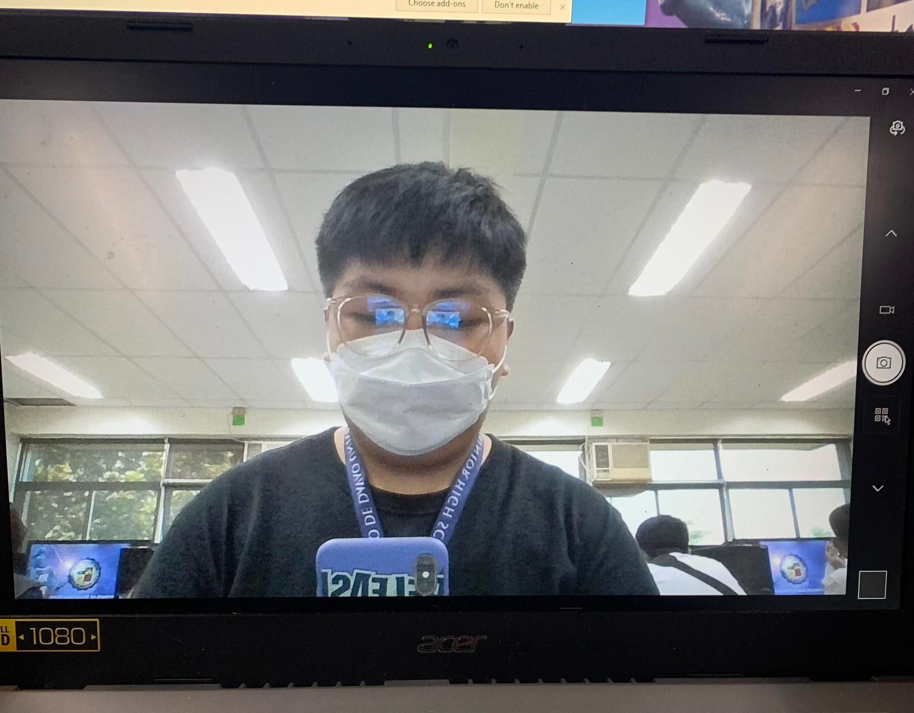

Significance of the project
This project is important for the institution because it helps them address the problem there are currently facing which is flooding. Through conducting a clean up drive the chances of flooding will decrease because blockage
in drainages will be avoided. Promoting proper waste disposal in the institution would also help them address their problem when it comes to long term effect because it allows them to exercise this practice to avoid trash
being thrown everywhere causing blockage in the drainages which can lead to flooding on the area.
This project is important for the Ateneo students because it allows us the Ignatian Values such as Cura Personalis which is to take care of one another or do service without asking for something in reward. This is being taught
to us becausr through this project we are able to help the community address their problem despite not getting anything as a reward because of our genuine intention towards the community. This is very important for us because it
allows us to grow as a good, caring, and kind person as we grow old and be a good example to the next generation.
In general, the project we created is important for the public since our project mainly revolves around planting. Most of the time, the main issue of the public is flooding and since our project involves planting, the project created
can be used to help avoid the issue like in the partnered institution wherein their main issue is also flooding. If our project is known to the public, they can take inspiration and create solutions that can also solve the issue.
Rationale
We chose to pursue this project because we saw that fixing this problem could help a lot more students than you can imagine; we say this because If it weren't for education at all levels, you wouldn't be able to read, write, speak, think critically,
make informed decisions, know right from wrong, effectively communicate, or understand how the world works. Education provides stability in life, and it's something that no one can ever take away from you. By being well-educated and holding a college
degree, you increase your chances for better career opportunities and open up new doors for yourself. Education also improves one's knowledge, and skills and develops personality and attitude. Most noteworthy, Education affects the chances of employment for people.
A highly educated individual is probably very likely to get a good job. The fulfilling feeling of giving back and contributing to society is unparalleled. Giving back is also a great way to get to know your community and its citizens. When you volunteer, you have the
opportunity to meet lots of new people.
Objectives
The main goal of our project is to lessen the casualty of flooding and even put efforts to stop flooding from happening in their area. Specific objectives for the projects- -Clean the area of the madrasah -Lessen the casualty/possibility of flooding to happen -Provide them with information regarding compositing and proper waste management -Address their environmental concern -Provide help for the students of the madrasah
Problem statement
The problem our partner institution which is the Madrasatos salam al-Islamia is currently facing is flooding. The problem they're currently facing is affecting the lifestyle and education of the people in the community. This problem needs to be addressed as the problem causes another
series of problems for the people in the community it affects the education of the students of the madrasah because classroom blackboards get wet so do their school supplies and the flooding in the area causes the people in the community to evacuate and it is dangerous for them to continue
living under these circumstances so it needs to be addressed as soon as possible. Places that are prone to flooding are frequently carefully managed in many countries. To keep places from flooding their banks, levees, bunds, reservoirs, and weirs are used. When these barriers fail, emergency
measures like sandbags or portable inflatable tubes are used.
Problem description
The problem that the partner institution faces affect the student's education, which is not good because education shapes a person’s future. The partner institution aims to help/support the Muslim youth in their basic education regarding their religion and values. The problem which is flooding
occurs on the campus of the partner institution, it impacts the students by their classes being delayed which lower the number of enrollees in the partner institution, the problem also makes it that day-to-day activities will be canceled due to the flooding. The desired condition envisioned for
the partner community is an institution where there are fewer chances of flooding. We want to accomplish making an improved solution, that way we will be able to fully solve the flooding problem in the institution.
Project background
What is the history of the identified problem? How long has it existed?
Flooding has a variety of effects. They cause property damage and put people and other living things in peril. Rapid water runoff damages or completely destroys wildlife habitats, breeding grounds for fish, and other areas due to soil erosion and silt deposition that occurs as a result. According to some archaeologists,
a historical flood between 5,000 and 7,000 years ago affected countries from the Black Sea to the floodplain between the Tigris and Euphrates rivers, which is often referred to as the "cradle of civilisation."
How is solving it (identified problem) related to the mission/cause/ goals of your institution?
Solving this problem is related to our problem in a way of helping them not to suspend classes. According to the Department of Education, To minimize the health and safety risks brought about by disasters and other natural calamities, the DepEd said that the suspension of classes and work during emergencies “remain to be necessary
in upholding the physical and mental well-being of learners and school personnel.” The guidelines were also issued to ensure that “their constitutional rights to life, health, safety, and property are always protected.”
Project summary
The project was identified to be the priority for addressing the environmental concern of our partner institution if their concern would be addressed and it would lead to the development of the madrasah. One of the top problems being experienced by the community in the madrasah is the constant flooding that's happening in their area.
It affects the education of the students as school materials and school facilities.
If this problem continues to impact the community and the area where the Madrasah is located, it would be crucial as it could be one of the reasons why the Madrasah will stop developing. The main objective of this project is to address their current concern, flooding.
The project will promote proper waste disposal, ensure sanitation, and address their current concern. Our project will target the community where the Madrasah is located; Our total budget is P 8,000 half are donations.
With the project, we will address their concerns and be able to help the people in the community, especially the students of the madrasah who are affected. We will also promote proper waste disposal and tree planting.
Proposed Project
Planting more trees in the community
This proposed project can help address the problem in the community which is flooding because by planting trees, we will be able to avoid flooding. Trees help avoid flooding by absorbing the rainwater. This is also a good and helpful proposal in the community because the effect is long-term which means that we will be able to avoid flooding in
the next generations as well if we continue this practice.
Promoting Proper Waste Disposal
This proposed project can help address the problem in the community because Improper Waste Disposal is one of the factors that cause flooding in the community. Improper Waste Disposal can lead to flooding because the trash that is being thrown everywhere can cause blockage in the drain and causes flooding. Just like the first proposal,
the effect of this proposal is long-term which means that the next generations can benefit if this practice is continued to be followed and taught.
Cleanup drive
This proposed project we will do a clean up drive in the area where tha madrasah is located. We hope to help them clean their area do lessen drainage clogging + other risk factors that might lead to flooding.
Our solution
How will you solve the problem you described
We will solve the problem described which is flooding by promoting proper waste disposal and conducting a clean-up drive. By providing them a garbage bin that will be used for a proper disposal of wastes. With this, they will be able to exercise the ways of segregating the waste properly which will help solve the problem they are facing because there
will be no trash thrown everywhere. By also conducting a clean-up drive in the community, we will be able to remove the trash stuck in the sewers and the trash is scattered everywhere. So, by promoting a proper waste disposal and conducting a clean-up in the community we will be able to help stop the flooding.
Why will the proposed solution be effective?
The proposed solution whichis promoting proper waste disposal and conducting a clean-up drive in the community will be effective because proper waste disposal helps stop the trash that is thrown everywhere which connects to our next solution which is clean-up. Proper waste disposal helps prevent the clogging in the canals. Whilst, if we do clean-ups we are
addressing the issue of the community on flooding.
Why is the proposed solution better than other alternatives?
This proposed solution is better than other alternatives because practically, we are still students and we believe that these solutions are doable for us.. This is also better than other alternatives because it directly solves the problem that is being pointed out in the community.
What would it take to make it happen?
For us to make it happen we must strengthen the collaboration between the institutions. We must also prepare a budget for our proposal by initiating campaigns to gain more support for others that want to be a part of the project. Other than the collaboration with the institution, and preparing the budget, we must also make some efforts in conducting our proposal
by providing a capacity building to the community partner on how to do proper waste segregation and also help in the clean-up drive.
MATH
What important data did you gather about the institution?
The important data we gathered is the information about our partner institution, which is the Madrasatos salam al-Islamia. With this data of information, we got to know better who our partner institution is, their advocacy, and the problems they mean to put an end to.
How did you gather this data?
We gathered this data from a video that the school prepared for us through the video and we personally contacted the head of the madrasah to get more additional informations. Gathering Information describes the process of acquiring knowledge. It is not the knowledge itself. When a portion of a story focuses on learning, it is the gathering of an education that is of concern,
not the education that ultimately has been gathered. Gathering Information need not be an academic endeavor.
Why do you find this data important as you continue your research?
I find the data we gathered from the institution important because it helped us identify what problem in the community we should focus on and address first. Without these data, we will have a hard time identifying what our project would be all about because we had no data as a reference. Because of the data we had from the institution, we identified the community's problem,
and what we should do to help the community, and formulated a proposed project that will help the community solve their main problem in the community, which is flooding. We also identified the resources we will need for this project to be successful in terms of human, In kind, and Monetary. So, to conclude this statement, I believe this data is essential because our plan was organized
so there won't be any problems along the way, which will make our project successful in terms of long-term benefit to the community members.
What information about the institution did your group find interesting? Explain
The important information we got from our partner institution which is the madrasatos salam al-Islamia, the basic information such as what a madrasah is and the challenges they face. The information we gathered interested us because we learned new things, and we got a glimpse of Muslim traditions and how they enrich their faith in their God.
How do you ensure that the data you gathered are reliable and valid?
The data gathered is ensured to be reliable and valid because we got our data from reliable source which is the head of the institution. Given from our lessons in CLE and we personally contacted the head of the institution to get the important information/data about our partner institution and what we needed to know about them. With the reliable sources we got we are ensured that we know our partner instutution well now.
How do you think your geometry learnings help you in your ET3/PT as a reflective problem-solver?
As Geometry refers to that branch of mathematics that is focused on the measurement and relationship of lines, angles, surfaces, solids, and points, it becomes necessary for the students to practice the same to their best. For example, calculating the triangle's angles is an example of geometry. Similarly, it is used in several basic methods to calculate more specific ones and obtain the desired result like geometry is used
for calculating the Pythagoras theorem, etc. as part of the maths concepts.
To what extent does data gathering in your research reflect yourself as an Atenean?
With the data we have gathered, we were able to get to know our partner institution, including the problem they are currently experiencing, With the data, as Ateneans will use this data we have gathered and help them with the problem they are experiencing; we will provide help and give them our honest opinion and ideas about whats our take to this issue. As Ateneans, we were taught to follow the 7C, which are competence, conscience,
character, compassion, community, culture, and Christ-centeredness- These core values are what we must carry and follow as we do things. And, of course, help others Ad Majorem Dei Gloriam or for the greater Glory of God.
Social Studies
Significance of the Study
This study allows us to help Madrasah by assisting them in lessening the possibility of floods from happening again. Through this study/proposal, we will be able to reduce the chances of flooding in their area as well because we believe that the two leading causes of flooding are the clogging of the drainages and poor waste disposal in the community. Through this project, they would also be able to strengthen their teamwork in the community
by helping each other in solving their community problem, which is flooding. They can do this by simply volunteering in our clean-up drive.
Background of the Study
In this cleanup drive, we strive to make sure we leave the area we clean spotless. By simply being exposed to soil, water, or air that includes harmful compounds, human health can easily be severely influenced by land contamination. By lowering or removing pollution, environmental remediation will benefit all life nearby damaged regions of land.
About the designer

He’s Renz. He's a guy that likes to procrastinate when it comes to tasks. He tries to find his motivation to help his groupmates and do his part in functions. He was assigned to do the background and significance for the performance task in the 3rd quarter. For the first three days, he had no motivation, but since the deadline was closing, he was starting to get pressured,
but eventually, he finished his part. He hopes for the best for his group and wishes he doesn't let him down.